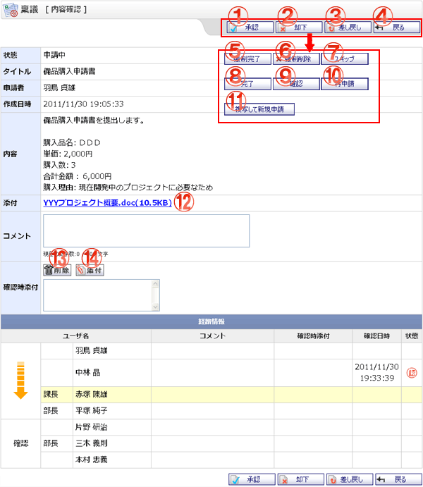

稟議の承認・否認・却下の作業や、完了した内容の確認などがおこなえる画面です。

機能説明
承認ボタン自分が承認経路にいて、確認の順番が回ってきた場合に表示されます。クリックすると承認確認画面へ遷移します。承認確認画面でOKボタンをクリックすると稟議を承認します。 |
却下ボタン自分が承認経路にいて、確認の順番が回ってきた場合に表示されます。クリックすると却下確認画面へ遷移します。却下確認画面でOKボタンをクリックすると稟議を却下します。 |
|---|---|
差し戻しボタン自分が承認経路にいて、確認の順番が回ってきた場合に表示されます。クリックすると差し戻し確認画面へ遷移します。差し戻し確認画面でOKボタンをクリックすると稟議を一人前へ差し戻します。 |
戻るボタン遷移元の画面へ遷移します。 |
強制完了ボタン管理者が申請中案件管理画面から遷移してきた場合に表示されます。クリックすると強制完了確認画面へ遷移します。強制完了確認画面でOKボタンをクリックすると稟議を強制的に完了させます。 |
強制削除ボタン管理者が申請中案件管理画面から遷移してきた場合に表示されます。クリックすると強制削除確認画面へ遷移します。強制削除確認画面でOKボタンをクリックすると稟議を削除します。 |
スキップボタン管理者が申請中案件管理画面から遷移してきて、現在確認中の承認者が承認経路の最後ではない場合に表示されます。クリックするとスキップ確認画面へ遷移します。スキップ確認画面でOKボタンをクリックすると承認の順番をスキップし次の承認者へ進めます。 |
完了ボタン自分が承認した稟議を、自分より後の経路の承認者が承認せず差し戻してきた場合に表示されます。クリックすると完了確認画面へ遷移します。完了確認画面でOKボタンをクリックすると稟議を完了させます。 |
確認ボタン自分が最終確認にいる場合に表示されます。クリックすると確認画面へ遷移します。確認画面でOKボタンをクリックすると稟議の承認状況を確認済にします。 |
再申請ボタン自分が作成した稟議であり、承認経路の承認者から差し戻されてきた場合に表示されます。クリックすると再申請確認画面へ遷移します。再申請確認画面でOKボタンをクリックすると稟議を再申請します。 |
複写して新規申請ボタン自分が作成し、かつ完了した稟議の場合に表示されます。クリックすると稟議新規登録画面へ遷移します。その際、申請内容が各入力項目に設定されます。 |
添付ファイル名クリックすると添付ファイルのダウンロードができます。 |
削除ボタン添付のリストで選択中の添付ファイルを削除します。 |
添付ボタン添付ファイル選択画面をポップアップで表示します。ファイルを選択し、確定すると添付のリストに選択したファイル名が追加されます。 |
表示・入力項目説明
状態
稟議の状態が表示されます。
タイトル
稟議のタイトルが表示されます。
申請者
稟議の作成者が表示されます。
作成日時
稟議の作成日時が表示されます。
内容
稟議の内容が表示されます。
添付
添付ファイル名が表示されます。
コメント
承認作業時に表示されます。コメントを入力します（300文字以内）。
確認時添付
承認作業時に表示されます。添付ファイルを指定します。
経路情報
承認経路、最終確認の役職・ユーザ名・コメント・確認時添付・確認日時・状態が表示されます。